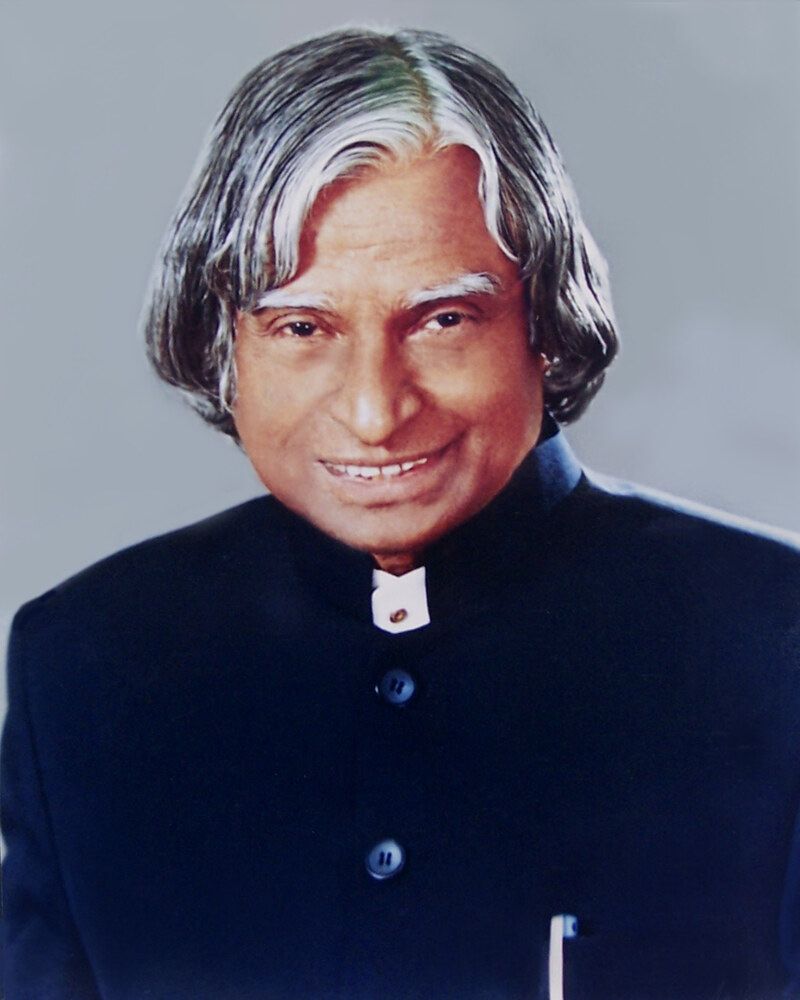

Biography
Avul Pakir Jainulabdeen Abdul Kalam was born on October 15, 1931, in the coastal pilgrimage town of Rameswaram, Tamil Nadu. Coming from a modest family where his father was a boat owner and an imam, young Kalam exhibited perseverance and curiosity from childhood, waking up early to distribute newspapers to support his family while pursuing his education.
He graduated in physics from Saint Joseph's College, Tiruchirappalli, before moving to Madras to study aerospace engineering at the prestigious Madras Institute of Technology (MIT). Although his early dream of becoming an Indian Air Force fighter pilot was narrowly missed by just one rank, he turned his disappointment into dedication by joining the Defence Research and Development Organisation (DRDO) and subsequently the Indian Space Research Organisation (ISRO).
At ISRO, Dr. Kalam served as the Project Director for India's first Satellite Launch Vehicle (SLV-III), which successfully placed the Rohini satellite in near-Earth orbit in 1980. He later returned to DRDO to lead the Integrated Guided Missile Development Programme, guiding the indigenous development of strategic missiles including Agni and Prithvi. In 1998, as Chief Scientific Adviser to the Prime Minister, he played a central leadership role during the Pokhran-II nuclear tests.
In 2002, Dr. Kalam was elected as the 11th President of India with widespread admiration across the political spectrum. Affectionately known as the “People's President,” he opened Rashtrapati Bhavan to citizens of all walks of life and made youth education his primary mission. Following his presidency, he returned to his lifelong passion for teaching, delivering lectures until his very last breath on July 27, 2015, at IIM Shillong.
“Dream, dream, dream. Dreams transform into thoughts and thoughts result in action.”— Dr. A. P. J. Abdul Kalam
Major Achievements & Honors
-
Satellite Launch Vehicle (SLV-III): Successfully directed the development of India's first satellite launch vehicle, which deployed the Rohini satellite into orbit in 1980.
-
Missile Development (IGMDP): Spearheaded the Integrated Guided Missile Development Programme, leading to the creation of strategic missiles including Agni and Prithvi.
-
Pokhran-II Nuclear Tests (1998): Served as the chief coordinator and scientific adviser during the Pokhran-II tests, solidifying India's national defense capabilities.
-
Bharat Ratna & National Honors: Conferred India's highest civilian honor, the Bharat Ratna (1997), along with the Padma Bhushan (1981) and Padma Vibhushan (1990).
-
11th President of India (2002–2007): Served with exceptional humility, championing education, technology, and rural development through the PURA initiative.
-
Inspiring Author & Mentor: Authored bestselling inspirational books including Wings of Fire, Ignited Minds, and India 2020, directly interacting with over 18 million students.
Timeline of Important Milestones
-
1931Birth: Born on October 15 in Rameswaram, Tamil Nadu.
-
1954Physics Degree: Graduated with a B.Sc. in Physics from Saint Joseph's College, Tiruchirappalli.
-
1958Aeronautical Engineering: Completed aeronautical engineering studies at the Madras Institute of Technology (MIT).
-
1980Rohini Orbit: Successfully placed the Rohini satellite in orbit, making India an indigenous spacefaring nation.
-
1982–1998Missile Programme: Directed the Integrated Guided Missile Development Programme at DRDO.
-
1997Bharat Ratna: Awarded India's highest civilian honor for scientific excellence.
-
1998Pokhran-II: Led scientific planning and execution for the Pokhran-II nuclear tests.
-
2002President of India: Sworn in as the 11th President of the Republic of India.
-
2007Return to Teaching: Concluded presidential term and returned to full-time academic teaching and writing.
-
2015Final Lecture: Passed away on July 27 while delivering a lecture to students at IIM Shillong.
A Lasting Legacy
Dr. A. P. J. Abdul Kalam remains one of modern India's most cherished icons not only for his scientific brilliance, but for his extraordinary humility and unwavering faith in youth. He lived by the conviction that the true strength of any nation resides in the dreams and discipline of its students.
Despite holding the highest constitutional office, he lived an ascetic life, leaving behind only his books and teachings. His journey stands as timeless proof that modest beginnings are never a barrier to greatness, and that genuine dedication to service can inspire an entire civilization.